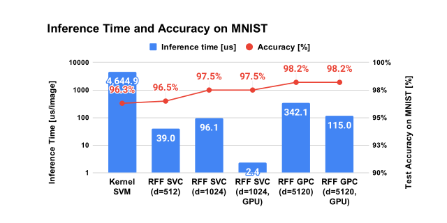
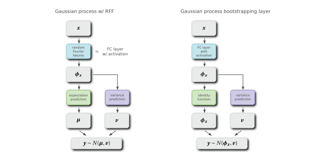
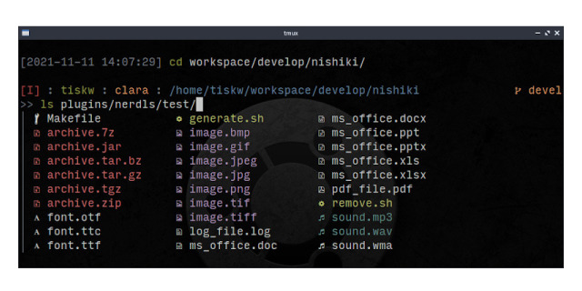

Tetsuya Ishikawa
Everything in the World is Made of Mathematics
Code
拙作のソフトウェアをご紹介するページです
rfflearn: ML toolkit for RFF
インタフェースを scikit-learn に似せた，Random Fourier Feature（以下，RFF）の Python 実装です．機械学習の1手法として有名なカーネルサポートベクターマシン（以下，K-SVM）は，推論時の計算時間が学習データセットの数に比例します．これは K-SVM が無限の自由度を有することに起因しており，それこそが K-SVM の強みなのですが，データセットの数が膨大になると推論時間が現実的でなくなります．そこで「カーネル関数を有限自由度の関数で近似してしまえ」という方針で計算量を大幅に減らしたのが RFF です．同時に学習時間も大幅に減少します．動作には Python3 と scikit-learn が必要です．Optuna による自動ハイパーパラメータ調整や Shap を用いた特徴量重要度の可視化にも対応しています．
GitHub RepositoryGaussian process bootstrapping layer
ニューラルネットの汎化性能を向上させることを目的とした，ブートストラッピング層のご提案です．ガウス過程モデルに random Fourier features を適用すると，全結合層と似た数学的構造を持ちます．これを発展させることで，全結合層や畳み込み層に特徴量の予測分散を算出させることができます．この予測分散を用いて特徴量にノイズを加えることで特徴量をブートストラップし，汎化性能を高めるのがこのレポジトリでご提案する Gaussian process bootstrapping layer (GPB layer) です．理論的な詳細はこちらの文書 をご参照下さい．網羅的ではありませんが，とりあえず LeNet-5 と CIFAR10 の組み合わせで効果を確認しています．実験結果および GPB layer の PyTorch 実装を GitHub で公開しています．
GitHub Repositorynishiki: shell ラッパー
Linux のコマンドラインが大好きだけれども cd や mv コマンドなどでファイルパスを指定するのが面倒！，あるいはオプション引数を覚えきれない！というそこの貴方へ．nishiki はコマンドを入力しながらファイルパスやオプション引数の候補をリアルタイムに画面に表示し，TAB を押すと補完することができます．通常のシェルと比較すると煩わしいくらいの補完です．本ソフトウェアは Nim で記述されており，簡潔さのために 500 行以内で実装されています（ただしコメントや空白行はカウント外）．また，任意の言語で作成した外部プログラムをプラグインとして呼び出すことができます．ただし本ソフトウェアは shell ではなく，編集補助のための shell ラッパーという点にご注意下さい．ソースコードは GitHub で公開しています．
GitHub Repository